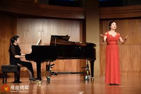

音域

Tenor(男高音):音域佔c－c2共15度的歌唱家。他們按音質、音色、音區等不同特點分為：抒情花腔男高音（lirico-Leggero tenor）、抒情男高音（lyric tenor）、英雄男高音（heldentenor）和戲劇男高音（dramatic tenor）。
Bass(男低音):音域F－f1共15度（按譜所示低8度）的歌唱家，音色低沉、渾厚、老成、持重。
(女高音):音域指成年女歌手能達到的聲音頻率（而非響度）最高的（通常是C4-C6）範圍。按音色、音區等不同特點分為：花腔女高音（Coloratura soprano）（聲音最高，能唱出相當高的顫音）、抒情女高音（lyric soprano）（聲音較高，連貫流暢）和戲劇女高音（dramatic soprano）（聲音較低但有力度）
Alto(女低音):女聲中最低的聲部，音域通常是從中央Ç下的˚F音往上爬升二個八度（F3〜F5）音色相比女高音較寬厚深沉，有時候一些音色比較磁性暗啞，而聲音又渾厚的女中音，也會被歸類爲女低音。
